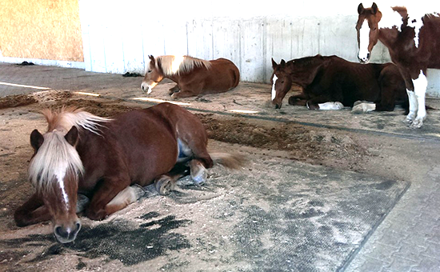

Der Liegeplatz
Pferde schlafen immer wieder über den Tag verteilt in kurzen Phasen von höchstens ein oder zwei Stunden. Der Einstreu in den Liegebereichen muss die Körpertemperatur der Pferde während des Schlafens aufrechterhalten. Zudem sollte er die Nässe von Urin binden können.
